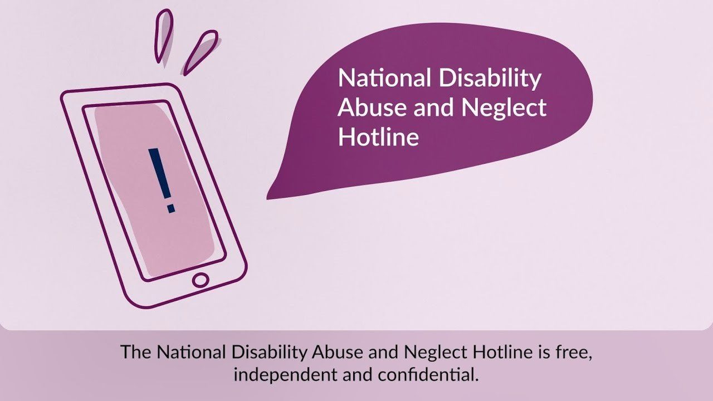
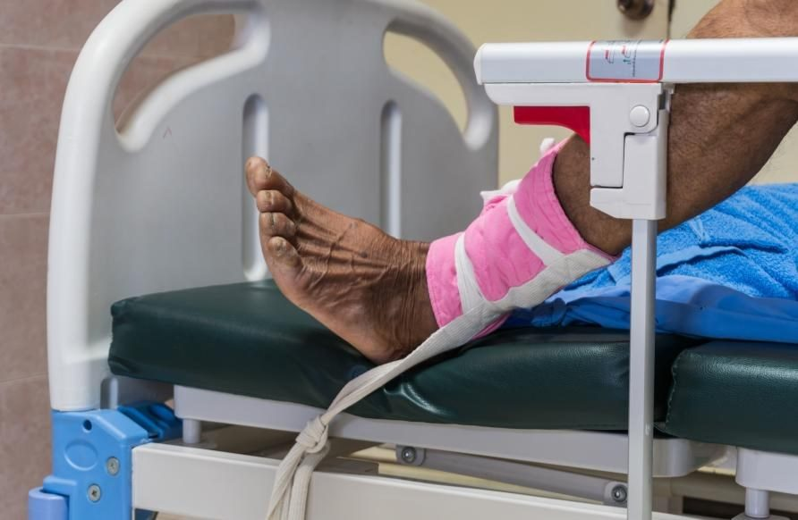
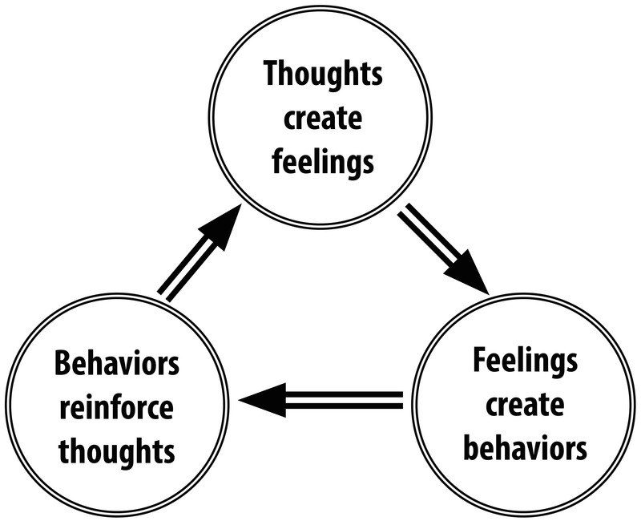

CHCCCS031 CHCCCS040 Individual Support and Wellbeing Cluster · Lesson 7
Safe, fair and lawful
Abuse and what to do, restrictive practices, positive support for changed behaviour, behaviour support plans, speaking up, ten legal and ethical words, and risks at work.
People who need support can be vulnerable. Your job is to keep them safe, treat them fairly, and follow the law. In this lesson you learn to spot abuse and report it, to understand restrictive practices and why they are a last resort, to respond to changed behaviour in a positive way, and the legal and ethical words that guide everything you do.
Abuse is any action, or failure to act, that causes harm to a person. Your assessment asks for two signs you might see or hear for each type. Flip through the cards.
Listen to the explanation
Emotional / Psychological abuse
Threats, put-downs, bullying, controlling the person.
The person puts themselves down: "I'm stupid."
No confidence, or afraid to give an opinion.
Afraid to do anything another person does not want, in case they are punished.
More anxiety; fear of a particular person; a change in how they get on with people.
You do not have to prove abuse. If you see or hear any sign, you report it.
Listen to the explanation
NP15 S2 P1Report all signs of abuse to your supervisor or manager straight away.
NP15 S2 P2Make sure the person is safe. If someone is in danger, call 000.
NP15 S2 P3Write down what you saw and heard, in the person's own words where you can. Facts, not opinions.
NP15 S2 P4Do not investigate yourself, and do not confront the person you suspect.
NP15 S2 P5In aged care, serious incidents are reported to the Commission under the Serious Incident Response Scheme (SIRS). In disability, they are reportable incidents to the NDIS Commission. Your manager does this, but you start it by reporting.

Watch: Reportable incidents under the Serious Incident Response Scheme (SIRS) (Aged Care Quality and Safety Commission)
KAMA policy and procedure Copy the original procedure into your assessment. Do not write your own.
3 Restrictive practices: what they are, and the five types **
A restrictive practice is anything that is done to limit a person's movement, thoughts or actions. It takes away their rights and freedom, so it is only ever a last resort.
Listen to the explanation
NP15 S3 P1In your own words: interventions and measures used to limit the movement, thoughts and actions of a person.
NP15 S3 P2Chemical restraint: medication used mainly to control behaviour, not to treat an illness.
NP15 S3 P3Environmental restraint: limiting where a person can go or what they can use, for example locking doors or putting things out of reach.
NP15 S3 P4Mechanical restraint: a device that stops movement, for example a chair with a fixed tray table, lap belts, bed rails.
NP15 S3 P5Physical restraint: using hands or body to stop a person moving.
NP15 S3 P6Seclusion: keeping a person alone in a room or place, or away from the community, where they cannot leave.

Watch: Reducing restrictive practices: Mary (The Royal College of Psychiatrists)
Try itMatch the restrictive practice
Match the type of restrictive practice to the example (the same words as your assessment).
The notes above will blur while you try. You can peek any time.
4 Changed behaviour: positive, proactive support **
Behaviour is communication. When behaviour changes, ask why. A positive, proactive approach looks for the reason, respects the person's dignity, and plans ahead, so restrictive practices are not needed.
Listen to the explanation

Luke at the café
Luke has had a tart and a milkshake. He wants another large milkshake and carrot cake. His voice gets louder: "But I want more!"
Respect Luke and protect his dignity: no public telling-off or embarrassment.
Teach life skills (healthy choices, communication) at home, not in public.
He might enjoy making treats at home, so the shopping is about the ingredients.
Miranda and the empty fridge
Miranda loves Monday shopping. On Tuesday the fridge is empty and the food is in the bin. She says she needs to go shopping.
Help Miranda understand she does not need to be out of food to go shopping.
She could go shopping every day if she likes.
She may need more meaningful activities during the week, not only shopping.
Bethany empties her wardrobe
Every day around 3.30 pm Bethany piles all her clothes and things on her bed. Staff take an hour to put it back.
Staff can keep tidying up, as long as nothing is damaged and she is not hurt.
Look for the reason: why does she pack at 3.30?
Offer meaningful activities at that time so she feels comfortable and fulfilled.
Phillip during the church service
Phillip paces in front of the screen during a livestreamed church service. People yell "Go away!" and he gets upset.
Engage Phillip in conversation. Ask if he needs or wants something.
Distract him with an activity that is meaningful to him.
Plan ahead for next Sunday: an activity before the service starts.
Try itPositive or restrictive?
Is each response positive and proactive, or restrictive?
The notes above will blur while you try. You can peek any time.
Restrictive practices may only be used when there is a behaviour support plan (aged care) or a positive behaviour support plan (disability), and the use is authorised as a last resort. Your assessment asks what the plan is, how it is developed, who develops it, and who authorises the restrictive practices.
Listen to the explanation
NP15 S5 P1What: a detailed document with the strategies and interventions to support a person's changed behaviour. The goal is positive behaviour and a better wellbeing and quality of life.
NP15 S5 P2How it is developed: from assessments, information gathered from interactions (including known triggers), the strategies already tried (what worked and what did not), and details of any restrictive practices used.
NP15 S5 P3Consent: there must be evidence that the person, or their authorised decision-maker, has consented to each restrictive practice.
NP15 S5 P4Who develops it (aged care): the organisation's management, together with health professionals, the person and their authorised decision-maker.
NP15 S5 P5Who authorises (aged care): the person gives informed consent. If they cannot, a restrictive practices substitute decision-maker consents (for example a guardian or an attorney appointed for personal matters). Chemical restraint must also be prescribed by a doctor or nurse practitioner.
NP15 S5 P6Disability sector (Queensland): the process is similar, but the organisation must apply to QCAT (the Queensland Civil and Administrative Tribunal) for approval to use restrictive practices. Short-term, emergency requests can go to the Public Guardian or the Chief Executive of the Department.
Norelle is a close friend and a fellow support worker. Your families go fishing and camping together. This morning you saw Norelle use an authorised restrictive practice on her client Janice when it was not necessary. Norelle said she was "just so tired and needed a bit of an easier day".
Listen to the explanation
NP15 S6 P1You can be kind: she may not be feeling well, and you understand she is tired.
NP15 S6 P2But you must still follow your organisation's guidelines and the law. Friendship does not change that.
NP15 S6 P3Report it to management. Using a restrictive practice when it is not needed is reportable under SIRS in aged care, and a reportable incident under the NDIS in disability.
NP15 S6 P4What you might say: "Norelle, I know you are exhausted, but that was not OK for Janice. I have to report it. Please talk to the manager about getting some support."
Try itWhat do you do?
Choose the best answer.
The notes above will blur while you try. You can peek any time.
Your assessment asks for a meaning, an example in an organisation, and an example by a support worker for each of these ten. Flip through the cards. You learned many of them in CHCLEG001 too.
Listen to the explanation
Human Rights
Meaning: basic rights all people have, for equality and freedom (for example the Universal Declaration of Human Rights, or the Human Rights Act 2019 (Qld)).
Organisation: staff uphold the Statement of Rights (aged care, Aged Care Act 2024) or the NDIS Participant Charter; people choose their food and their bedtime.
Support worker: give choices, ask before touching belongings or opening doors, speak up when a person's rights are not respected.
Confidentiality
Meaning: protecting personal information. Not repeating conversations. Limiting who can see files.
Organisation: files in locked cabinets, password-protected software.
Support worker: do not talk about the person outside work; do not read their mail, texts or emails; do not repeat private conversations.
Dignity of Risk
Meaning: the right to take risks, to have experiences and grow as a person.
Organisation: the person keeps the right to think and act for themselves; staff do not stop an activity just because they think it is dangerous.
Support worker: do not stop a person from an activity or a food just because you think it is risky or unhealthy.
Disclosure
Meaning: sharing personal or key information for a specific purpose.
Organisation: a support worker reports key health information to a senior staff member.
Support worker: do not share personal information with an outside agency just because you think you have permission.
Discrimination
Meaning: unfair treatment because of a personal attribute, such as age, race or gender.
Organisation: not inviting a person to an event because of their religion is discrimination.
Support worker: work in a non-discriminatory way; treat everyone fairly.
Duty of Care
Meaning: a moral or legal duty to keep others safe and well.
Organisation: clean up after care; do tasks to the standard in the policies and procedures.
Support worker: keep your car clean, safe and accessible, drive responsibly, and give the support a "reasonable person" would.
Mandatory Reporting
Meaning: a legal duty on some people to report signs of suspected abuse or neglect of vulnerable people.
Organisation: report all signs of abuse to management within 24 hours; management follows SIRS (aged care) or reportable incidents (disability).
Support worker: report through SIRS or reportable incident processes, to the Police where needed, or to the NDIS Commission or the Aged Care Quality and Safety Commission.
Medication
Meaning: legal processes for safe assistance with medication, by registered nurses or support workers who are trained and endorsed.
Organisation: have permission to assist; follow the Rights; report any problems.
Support worker: remind the person to keep medication locked away; follow the pharmacy and doctor directions; report problems.
Privacy
Meaning: protecting and respecting a person's body, belongings and personal information.
Organisation: close doors and curtains during personal care.
Support worker: do not go into rooms or cupboards without permission; keep doors and curtains closed during personal care.
Work role boundaries, responsibilities and limitations
Meaning: your job description sets out your duties, your rights and the limits of your role.
Organisation: ask other staff for help and direction; keep professional boundaries; use professional language.
Support worker: keep work and personal life separate (no socialising after hours); refer the person to other services when something is outside your training.
Try itMatch the word
Match each legal and ethical word to its meaning.
The notes above will blur while you try. You can peek any time.